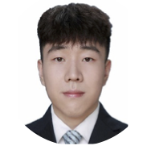
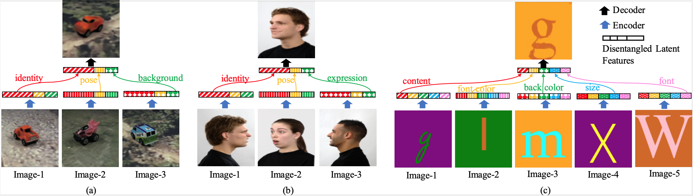
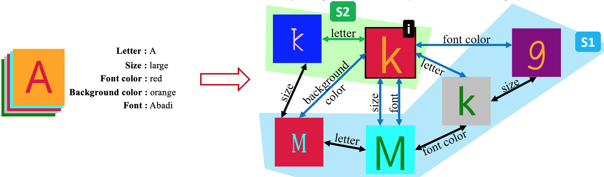

[Paper] [Code] [Fonts Dataset]
We are:
Yunhao (Andy) |
Sami |
 Gan |
Laurent |
Zero-shot Synthesis is the process of creating (synthesizing) a photo that has not been seen before (zero-shot). We formalize a method that allows for controllable synthesis, next.
Our method accepts a query where each attribute is given by example:

Figure 1: Zero-Shot Synthesis. For instance, look at (b) of above:
user synthesizes image (b, top) with query of: face identity of Image-1, looking in the direction (pose) as Image-2, and with facial expression as Image-3
Group-Supervised Learning (GSL) is an approach that can be used for Zero-shot Synthesis.
Learning signal is derived from (batches of) groups of semantically-related examples.
These semantic relations can be represented as a (multi-)graph:

Figure 2: Multigraph Construction.
Left: Dataset of examples, where each example has attribute classes (e.g., letter, size, font color) and their corresponding values (e.g., A, large, red),
gets converted into multigraph, Right, where a pair of examples will be connected with zero-or-more edges, one edge for each shared attribute value. The learning algorithm utilizes the multigraph. The sets S1 (blue) and S2 (green) both cover example (i). In particular, all attributes of image (i) are contained in the union of images in S1 (and also in S2) - we term S1 and S2 as cover sets for image (i).
Our general learning framework (GSL) can be intuitively explained as follows:
since all attributes of image (i) are present in set S1, then we
should be able to re-construct (i) solely from S1.
Zero-shot Synthesis Network (GZS-Net) is a neural network based on auto-encoders. We train it on simple cover sets, like (green) S2 that contain (i) and one more example sharing an attribute with (i). The overall training pipeline includes 3 loss terms:
Got Questions? We would love to answer them! Please reach out by email! You may cite us in your research as:
@inproceedings{ge2021zeroshot,
title={Zero-shot Synthesis with Group-Supervised Learning},
author={Yunhao Ge and Sami Abu-El-Haija and Gan Xin and Laurent Itti},
booktitle={International Conference on Learning Representations},
year={2021},
url={https://openreview.net/forum?id=8wqCDnBmnrT}
}